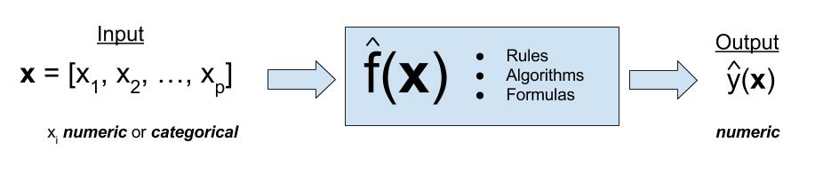

| Statistical inference | Statistical learning |
|---|---|
| Outcome variable | Response, output |
| Explanatory variable | Predictor, input, feature |
| Model | Algorithm |
| Uncertainty | Error |
Machine Learning
POLI SCI 210
Introduction to Empirical Methods in Political Science
AI Prompts
TBD
Roadmap
Tuesday: Big picture
Thursday: Simple models, generative AI
Summary of the course
Focus on inference since it is how political scientists test theories
Statistical inference: summarize data, quantify uncertainty
Univariate: Mean, confidence intervals, standard errors
Bivariate: Difference in means (experiments, potential outcomes)
Multivariate: OLS regression
Summary of the course
Subplot: Bivariate and multivariate only make sense if we want to make causal statements
Causal inference: Impose some structure to justify assumptions
Small N: Necessary and sufficient as logic of inference
But inference is not the only thing we do with data
These are not statistical inference
But they all mean (kinda) the same
Data science
Machine learning
Statistical learning
Artificial intelligence
Predictive modeling
Big data (?)
Different flavors depending on the field, but methods are the same
How are they different?
Ok, but how are they different?
Statistical inference
Use data we have to learn about a target population
Or measure a quantify of interest
Main product: Estimates, uncertainty
Statistical learning
Use data we have to predict how new data will look like
Minimize prediction error
Main product: Rules, error metrics
Same stuff, different language
Same stuff, different language
| Statistical inference | Statistical learning |
|---|---|
| Outcome variable | Response, output |
| Explanatory variable | Predictor, input, feature |
| Model | Algorithm |
| Uncertainty | Error |
Same stuff, different language
| Statistical inference | Statistical learning |
|---|---|
| Outcome variable | Response, output |
| Explanatory variable | Predictor, input, feature |
| Model | Algorithm |
| Uncertainty | Error |
Same stuff, different language
| Statistical inference | Statistical learning |
|---|---|
| Outcome variable | Response, output |
| Explanatory variable | Predictor, input, feature |
| Model | Algorithm |
| Uncertainty | Error |
Same stuff, different language
| Statistical inference | Statistical learning |
|---|---|
| Outcome variable | Response, output |
| Explanatory variable | Predictor, input, feature |
| Model | Algorithm |
| Uncertainty | Error |
Flavors of machine learning

Supervised: Predict “correct” answer
Example: Was this text written by AI? (yes/no)
Flavors of machine learning

Unsupervised: No “correct” answer
Learn underlying structure of data (dimensions, clusters)
Flavors of machine learning
Supervised learning

Toy example

How happy will the next person be?
They eat 5 cookies
How happy will the next person be?
They eat 5 cookies
We already know one way
Drawing lines!

Drawing lines!

Drawing lines!

Which one seems better?
Need to balance
Being as close as possible
Avoid relying on specific observations
We already have language for this
Machine Learning
POLI SCI 210
Introduction to Empirical Methods in Political Science